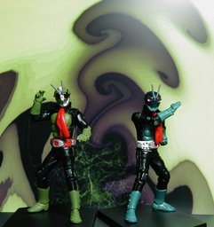
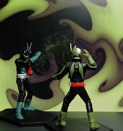
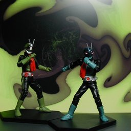

バンプレスト 仮面ライダー モーションフィギュア３ THE FIRST １号＆２号



バンプレストの仮面ライダーシリーズ MOTION FIGURE PART 3から１号と２号の立ちバージョンです。共にライダーキックバージョンもあります。高さは 12cm ぐらいです。頭と腕の関節が動き、写真以外に付け換え用の握り拳が付いています。 バンプレストにしちゃあ、エラくカッコいいアレンジだなぁと思ってたら、昔のテレビ版ではなく映画《仮面ライダー THE FIRST》の１号、２号のようです。 そんな映画があったとははじめて知りました。ココログに《公式ブログ》すらありますね。2005年11月5日ロードショウで、DVD が4月21日に発売されるようです。はじめから DVD やフィギュア売るのが目的なのかな？ 背景は Winamp の MilkDrop プラグインを WinShot したものです。 更新：2006-04-13 初公開：2006年04月13日 20:15:01 最新版：2006年04月13日 20:15:01 Links: バンプレスト: http://www.banpresto.co.jp/ 仮面ライダーシリーズ MOTION FIGURE PART 3: http://www.banpresto.co.jp/life/item/52184.html 仮面ライダー THE FIRST: http://www.amazon.co.jp/exec/obidos/ASIN/B000CBY8Y6 公式ブログ: http://maskedrider1st.cocolog-nifty.com/ MilkDrop: http://www.milkdrop.co.uk/ WinShot: http://www.woodybells.com/winshot.html